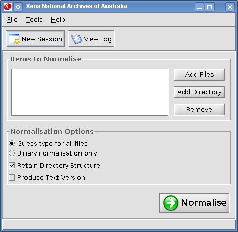
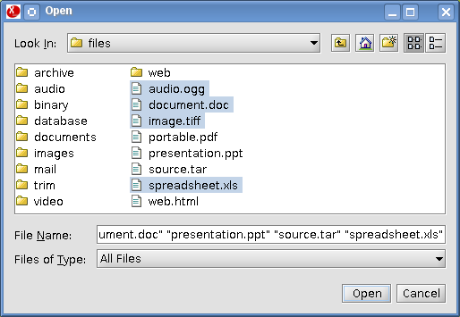
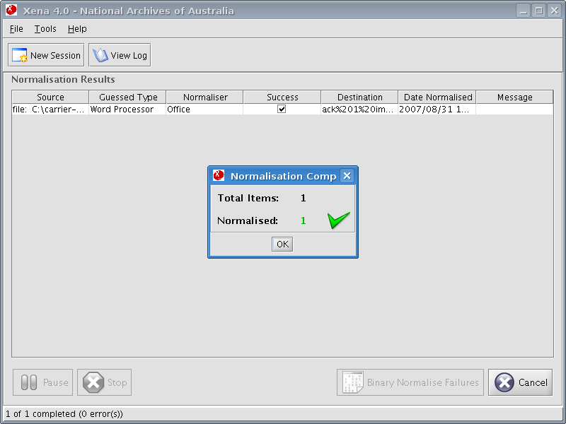

To normalise a single file, click Add Files from the main window.

Use the file browser to select the file to be normalised, then click Open.

Back at the main window, click the Normalise button to begin the normalising process.
During processing, the Pause and Stop buttons will become available. Please note that rather than halting the process immediately, either of these will interrupt processing once the current file has been processed. If the current file is large or complex, there may be some delay before either of these buttons come into effect.
Once processing is completed, the results are presented. Click OK.

Upon completion, the Cancel button may be used to delete the resulting Xena file(s) and start again. This may be useful if the wrong file was accidentally normalised. The New Session button may be used after completion to continue processing files without altering any existing results.
If a file is malformed or is of an unknown type to Xena, then the normalising process may fail. Failures are indicated in the results table with a brief explanation of the cause. If any failures occur, the Binary Normalise Failures button then becomes active and may be used to preserve failed files as text with embedded metadata.